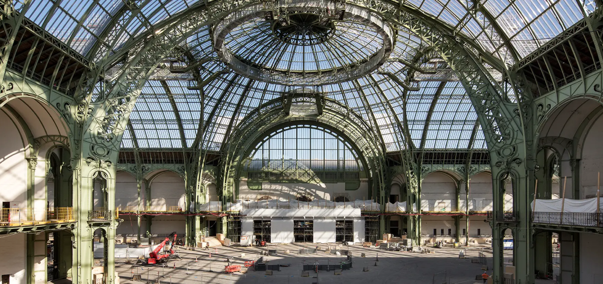
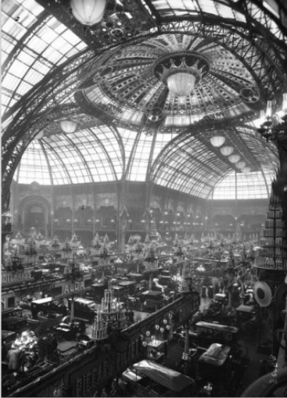
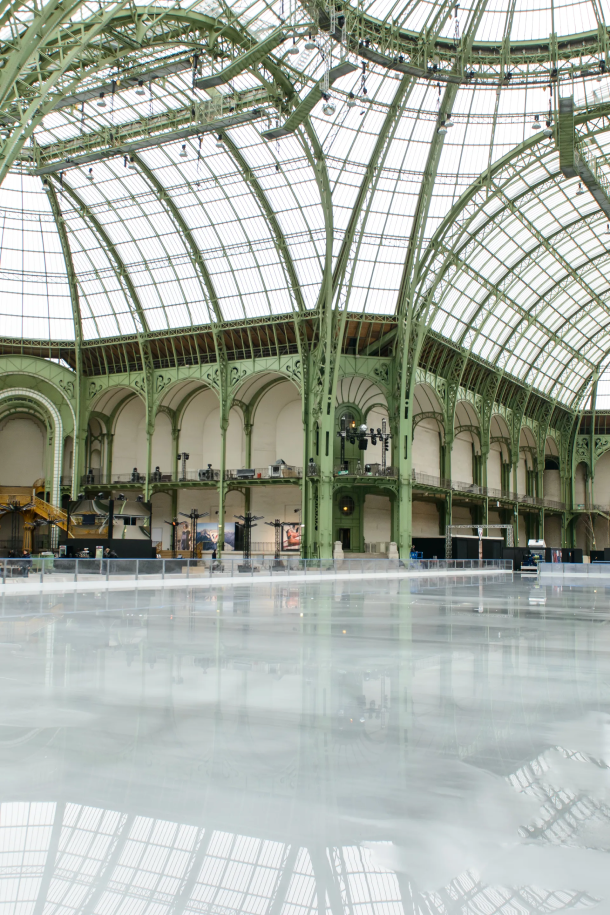

France

The New Grandpalais
In March 2021, after 100 years of busy life, Grand Palais closed to enter an important stage of work.This is for the Nave and its surrounding galleries until the 2024 ParisOlympics and Paralympics, The rest of the monument lasts until spring 2025.
2021년 3월, 100년의 바쁜 삶 끝에 그랑 팔레는 중요한 작업 단계에
들어서기 위해 문을 닫았습니다. 이것은 2024년 파리 올림픽 및
패럴림픽까지 네이브와 그 주변 갤러리를위해, 나머지
기념비는 2025년 봄 까지 지속됩니다.


Changes in history and time made this restoration essential.Grand Palais is writing a new page of history after 121 years of construction
역사와 시간의 변화는 이 복원을 필수적으로 만들었습니다.
그랑팔레는 건립 121년 만에 역사의 새 페이지를 쓰고 있습니다.
A new experience for the public
대중을 위한 새로운 경험
Work will allow for the rediscovery of monuments: spatiality, cross-flow and original decoration (sculpture, facade, interior decoration) will be found. Nave Palais de laBetween Découverte, the view between Champs-Élysées and Seine resumes. The natural light and the light from the ceiling will once again pierce the monument from side to side.The architect Pierre Vivien
작업은 기념물의 재발견을 허용할 것입니다: 공간성, 교차 동선 및
원래 장식(조각상, 정면, 실내 장식)이 발견될 것입니다. Nave와
Palais de la Découverte 사이, Champs-Élysées와 Seine 사이의
전망이 재개됩니다. 자연광과 천정의 빛이 다시 한 번 기념비를
좌우로 꿰뚫을 것입니다. 건축가 Pierre Vivien이 1960년대에
Malraux가 국립 미술관을 건립하는 동안 기념물에 만든 배치가
복원될 것입니다. 이 기념물은 또한 표준에 도달하고 새로운 기술
설치의 혜택을 받을 것입니다. 특히 거동이 불편한 사람들을 위해
접근성 조건이 개선될 것입니다.

Accueillir